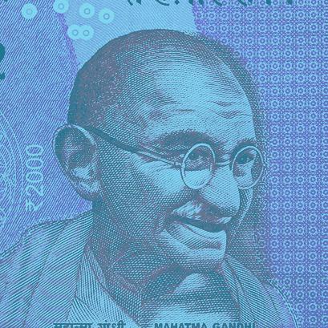

Mahatma Gandhi
Father of the Nation
Mohandas Karamchand Gandhi, also known as Mahatma Gandhi, was the leading figure responsible for spearheading India’s independence from British rule. Gandhi’s non-violent civil disobedience led to India’s independence on August 15, 1947. His actions influenced the world stage and was an inspiration to many civil rights movement leaders including Martin Luther King Jr., James Lawson, and James Bevel.

Biography
1869
Born in Porbandar, India on October 2.
1888
Left Porbander for Mumbai, leaving his wife, son, and family to study Law at University College, London.
1891
Returned to India after news of his mother’s passing. Psychologically unable to cross-examine witnesses, Gandhi’s attempt to establish a law practice in Mumbai failed.
1893
Spent 21 years in South Africa developing his ethics, politics, and political views.
1900
During the Boer war (1899 – 1901), Gandhi organized a group of eleven hundred Indian volunteers who supported British combat troops by medically serving on the front lines.
1906
While attending a protest meeting in Johannesburg, Gandhi adopted a method of civil resistance referred to as Satyagraha (devotion to the truth).
1915
Returned to India and gained exposure to Indian issues, politics, and people by joining the Indian National Congress.
1919
Implemented Satyagraha civil disobedience in protest of the Rowlatt Act passed by the British government and was arrested on April 9.
1920
Took leadership of the Indian National Congress and appealed to Indian people to act in civil disobedience against the British.
1922
Arrested again for the act of sedition, Gandhi was sentenced to six years in prison.
1924
He was released from prison due to his ailing health after a bout with appendicitis.
1930
With the help of the Indian National Congress the independence of India was declared, however, this declaration was not recognized by the British government.
1931
With the intention of breaking the law that forbade Indian citizens from producing or collecting salt, together with 78 volunteers, he marched 388 kilometers (241 mi) to make salt himself. Along the way he rallied huge crowds who gathered at a planned protest at Dharasana salt works on May 21, successfully upsetting the British hold on India. Gandhi was not able to attend this protest himself since he was interned under a regulation from 1827. Britain responded by imprisoning over 60,000 people who attended the march.
1932
He began a campaign to improve the lives of the “untouchables” which included a hunger strike that lasted 21 days.
1942
He unsuccessfully campaigned against any Indian participation in the World War II British war effort. The British imprisoned Gandhi, as well as, tens of thousands of congress leaders after they demanded immediate independence.
1947
The British government separated the British Indian Empire into two dominions, India and Pakistan. India had successfully won its Independence from British rule.
1948
Died at age of 78. He was assassinated by Hindu nationalist Nathuram Godse. The funeral procession was five miles long and had over a million people in attendance.

- “Where there is love there is life.”
- “Be the change that you wish to see in the world.”
- “The future depends on what we do in the present.”
- “An eye for an eye will only make the whole world blind.”
- “The weak can never forgive. Forgiveness is the attribute of the strong.”
You can learn more about Mahatma Gandhi on his Wikipedia Page.